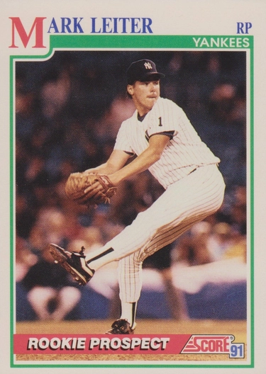

Mark Leiter
Career Highlights & Facts
(Facts are AI-generated and may require verification)
- Recipient of an award honoring a player who best overcomes adversity through spirit, determination, and courage.
- Middle of 3 brothers who all pursued professional baseball careers.
- Worked as a corrections officer during a 3-year hiatus from professional baseball caused by multiple shoulder surgeries.
Would you like to find out more about Mark Leiter?
Player Biography
Mark Leiter January 4, 2012 / in BioProject - Person Parent-Child , Siblings Tony Conigliaro Award / by admin This article was written by Clayton Trutor Mark Leiter was a right-handed pitcher who appeared in 335 games over 11 major-league seasons between 1990 and 2001 (1990-1999, 2001). He started 149 games and appeared in relief 186 times. Leiter pitched for eight clubs: the New York Yankees (1990), Detroit Tigers (1991-1993), California Angels (1994), San Francisco Giants (1995-1996), Montreal Expos (1996), Philadelphia Phillies (1997-1998), Seattle Mariners (1999), and Milwaukee Brewers (2001). Tall (6-feet-3) and lanky, Leiter was the middle of three baseball-playing brothers. His older brother, Kurt, spent four seasons as a pitcher in the Orioles’ minor-league organization (1982-1984, 1986). His younger brother, Al, was a two-time All-Star (1996 and 2000) and pitched for the Yankees, Blue Jays, Marlins, and Mets for 19 seasons (1987-2005). Mark’s son, Mark Jr., as of 2015 was in his third year as a starting pitcher in the Philadelphia Phillies’ minor-league organization. Mark Sr. is perhaps best known for the perseverance he displayed in the face of personal tragedy, which led the Boston Chapter of the Baseball Writers’ Association of America to name him the winner in 1994 of the Tony Conigliaro Award, given annually to the major leaguer who “best overcomes an obstacle and adversity through the attributes of spirit, determination, and courage that were the trademarks of Conigliaro.” 1 Mark and Allison Leiter’s second son, Ryan Alexander, born in July 1993, was diagnosed with a rare genetic disorder, Werdnig-Hoffman disease, also known as spinal muscular atrophy (SMA), a condition similar to amyotrophic lateral sclerosis (ALS), the disease that killed Lou Gehrig. Ryan Leiter’s battle with SMA lasted throughout the winter of 1993-1994. Eventually he lost the use of his limbs and the ability to be fed orally. As Ryan’s disease entered its final stages in March 1994, the Tigers released Mark during spring training. On March 21, 1994, the California Angels signed Leiter to a free agent minor-league contract. In the final weeks of spring training, Leiter won a spot not only on the Angels’ major-league roster, but in their starting rotation. On April 4, 1994, Opening Day, nine-month-old Ryan Leiter died in his mother’s arms, hours after saying goodbye to his father for the last time, who was on a flight to Minnesota with the Angels for their season opening series. Soon after their son’s death, the Leiters created the Ryan Leiter Fund, which raises money to aid families who are struggling with SMA. The Boston BBWAA chapter honored Mark Leiter for his personal strength, perseverance, and generosity amid family hardship. 2 Mark Edward Leiter was born on April 13, 1963, in Joliet, Illinois, to Alexander Leiter, a merchant seaman, and Maria Leiter, a homemaker. One of seven siblings (six brothers and a sister), the Leiters relocated to Ocean County, New Jersey, soon after Mark’s birth. 3 Raised on the Jersey Shore, Leiter graduated from Central Regional High School in Bayville, New Jersey, in 1981. He starred on the baseball team along with his brother Al, who was a freshman during Mark’s senior year, and classmate Jeff Musselman, who later pitched for the Blue Jays and Mets (1986-1990). Mark played baseball at Connors State Junior College in Warner, Oklahoma, a perennially nationally-ranked junior college team, and in 1983 he played far closer to home at Ramapo College in Mahwah, New Jersey. 4 The Baltimore Orioles selected Leiter in the fourth round of the January 1983 amateur draft. He spent the summer of 1983 with the Bluefield Orioles of the Rookie-level Appalachian League and the Hagerstown Suns of the Class-A Carolina League. At Bluefield he had a 2-1 record in six starts with a 2.70 ERA, but he struggled to a 1-5 record with a 7.25 ERA in eight starts in Hagerstown. Leiter returned to Hagerstown in 1984. As a starter he posted an 8-13 record with a 5.62 ERA in 27 appearances. Leiter worked nearly twice as many innings (139⅓) in 1984 as he had in his first season (72⅔), demonstrating an ability to eat up innings even if he struggled on the mound. He spent most of the 1985 season in Hagerstown, working primarily as a reliever and gaining eight saves in 34 games. Leiter received a late-season promotion to Double-A Charlotte, where he was 1-0 in five relief appearances. Leiter’s baseball career took a dramatic turn during spring training in 1986. He injured his right shoulder badly enough to require season-ending surgery. One missed season turned into three as his shoulder didn’t take to surgical repairs. Three shoulder surgeries over a three-year period kept Leiter out of baseball in 1986, 1987, and 1988. While he rehabilitated his shoulder, he worked as a corrections officer at the Ocean County Jail. 5 The Orioles released Leiter in June 1988. In September the Yankees signed him to a minor-league contract. Leiter started the 1989 season with Class-A Fort Lauderdale, where he pitched well enough early in the season to be promoted to Triple-A Columbus in May. His 9-6 record against International League competition earned him a long look at the pitching-strapped Yankees’ spring training in 1990 before he was returned to Columbus. After posting a 9-4 record in 30 appearances, 14 of which were starts, the 27-year-old Leiter was promoted to the Yankees in late July. Leiter made his major-league debut on July 24, 1990, against the Texas Rangers. Pitching in relief, he surrendered a single and a walk but no runs in 1⅓ innings, finishing the game in a 4-1 defeat. Leiter struggled in his next three appearances, and in early August the Yankees sent him back to Columbus. Called up again after the International League season, Leiter pitched in four more games for the Yankees, finishing his rookie season with a 1-1 record and a 6.84 ERA. His final appearance of the season, which also proved to be his final appearance in a Yankees uniform, was a high note: a seven-inning no-decision start against the Detroit Tigers in which he surrendered only one run. In March 1991 the Yankees traded Leiter to the Tigers for infielder Torey Lovullo. Leiter started the season with the Triple-A Toledo Mudhens but joined the Tigers in late April. Before the All-Star break he worked primarily as a long reliever. After the break, he made 15 starts, posting a 9-7 record for the season for the second-place Tigers. Leiter’s 1992 season bore a striking resemblance to 1991, as he alternated between long relief and the rotation, a consistent presence on Detroit’s staff. He started in 14 of his 35 appearances, with eight wins and five losses. Leiter spent much of the 1993 season in the same mode, alternating between long relief and a back-end starter. His old shoulder trouble returned, forcing him to the disabled list for much of the season’s second half and contributing to the club’s decision to release him the following spring, but not before Leiter underwent his fourth arthroscopic shoulder surgery. 6 Leiter signed with the California Angels shortly after the Tigers let him go, and earned a spot in the Angels rotation. After victories in his first two decisions that year, Leiter’s ERA ballooned to more than 5.00 in subsequent starts, and in mid-May he was sent to the bullpen. Leiter spent the remainder of the season as a middle and long reliever, working his ERA down to 4.72 in 40 appearances. Released after the season, Leiter signed with the San Francisco Giants in April 1995. The pitching-deprived Giants added him to their rotation, and he went 10-12 in 29 starts with a 3.82 ERA. Leiter returned to San Francisco in 1996, signing a one-year deal worth $1.5 million, more than twice what he made the previous season. Manager Dusty Baker had enough confidence in Leiter to make him the Opening Day starter (a road loss to the defending world champion Atlanta Braves.) 7 The rocky start to the season presaged a difficult year for Leiter. Through July he was 4-10 with a 5.19 ERA. On July 30, the day before the trade deadline, the Giants traded Leiter to the Montreal Expos for two pitchers, left-handed starter Kirk Rueter and right-handed reliever Tim Scott. The trade proved far more beneficial to the Giants. Leiter pitched well for the Expos, posting a 4-2 record and a 4.39 ERA for the contending Expos, who fell two games short of the wild card. (Rueter spent more than a decade with the Giants, becoming the franchise’s winningest left-handed pitcher since they moved to the Bay Area five decades earlier.) After the season, Leiter built on his late-season momentum and signed a two-year, $3.9 million deal with the Philadelphia Phillies, the team he grew up rooting for on the Jersey Shore. In 1997 Leiter struggled to a 10-17 record in 31 starts for the Phillies, with an ERA of 5.67 against early “steroids-era” National League hitting. The Philadelphia press came down hard on Leiter, a high-profile free-agent who wasn’t panning out on a last-place Phillies team. The coverage spurred Leiter to speak out against the “mean” and “negative” ways in which the Philadelphia media portrayed him. 8 In 1998 the Phillies moved Leiter to the bullpen, where he split his time between long relief and closing duties. Leiter, now 35, excelled in the bullpen, appearing in 69 games and posting a 7-5 record with a 3.55 ERA and 23 saves. After the 1998 season, the Phillies exercised a one-year, $1.3 million option on Leiter but traded him to the Seattle Mariners for left-handed pitcher Paul Spoljaric. Despite his struggles with the Phillies, Leiter looked back fondly on his time with the team. “I only played here two years in my career. And it was the biggest thrill, he said in 2013. “I don’t think there was a guy who loved playing for the Phillies more than I did. I know there are guys who played here for so many years and were so great. But to grow up as a kid coming here and dreaming about being on the field at the Vet someday and then getting to do it? That was amazing.” 9 Leiter pitched in only two games for Seattle, going on the shelf in early May with recurring shoulder problems. He missed the rest of the 1999 season and was released after the season. He also sat out the 2000 season. Meanwhile the injured Leiter bounced from the Mariners to the Pirates to the Rockies to the Mets to the Brewers in a series of trades and free-agent signings between 1999 and 2001, never once seeing major-league action in the 23 months between May 1, 1999, and April 5, 2001. Leiter spent the 2001 season, which proved to be his last, as a reliever and spot starter for the Milwaukee Brewers, appearing in 20 games scattered across another injury-riddled season. After the season the Brewers declined an option on Leiter’s contract and, at 38, he retired. Leiter retired with a career record of 65-73 and an ERA of 4.57.He pitched in 335 games in 11 seasons, 149 of which were starts. As of 2015 Mark and Allison Leiter resided in Lacey Township, New Jersey. After retiring, Mark established The Leiter Advantage, to offer pitching lessons to players. 10 The Leiters’ son Mark Jr. was a standout pitcher at Toms River North (New Jersey) High School and at the New Jersey Institute of Technology, where he earned first-team All-Great West Conference honors during his senior year and set a school record during his senior year with 103 strikeouts, including a school-record 20 in a May 2013 game against Chicago State. The Philadelphia Phillies selected the junior Leiter in the 22nd round of the June 2013 amateur draft. He finished the 2015 season with the Double-A Reading Fighting Phils. 11 Last revised: January 5, 2017 This biography appeared in “ Overcoming Adversity: The Tony Conigliaro Award” (SABR, 2017), edited by Bill Nowlin and Clayton Trutor. Sources In addition to the sources cited in the Notes, the author also consulted Baseball-Reference.com and Baseball-Almanac.com. Notes 1 Christopher Smith, “St. Louis Cardinals’ Mitch Harris, a Navy Lieutenant, Wins Tony Conigliaro Award Given by Boston Red Sox,” Masslive.com , December 15, 2015. Accessed on March 1, 2016: masslive.com/redsox/index.ssf/2015/12/st_louis_cardinals_mitch_harri.html. 2 Peter Schmuck, “Leiter Raises Awareness, Money After Losing Infant Son to Disease,” Baltimore Sun , June 13, 1994: C1; Claire Smith, “Baseball: A Son’s Fight Against Death Inspires a Father,” New York Times , April 24, 1994. Accessed on March 1, 2016: ; “Mark Leiter Back to Work,” New York Times , April 10, 1994. Accessed on March 1, 2016: nytimes.com/1994/04/10/sports/baseball-mark-leiter-back-to-work.html ; Nick Cafardo, “Baseball Writers’ Dinner Notebook,” Boston Globe , January 20, 1995: 44. For more information on aiding families dealing with SMA, see curesma.org. 3 “Obituary: Karl Alexander Leiter,” Legacy.com, January 10, 2013. Accessed on March 1, 2016: legacy.com/obituaries/app/obituary.aspx?pid=162251944 4 “Gary Vaught,” University of Indianapolis Athletics . Accessed on March 1, 2016: athletics.uindy.edu/mobile/staff.aspx?staff=6. 5 Tim Kurkjian, “The Comeback Kids,” Sports Illustrated , September 23, 1991. Accessed on March 1, 2016: si.com/vault/1991/09/23/106783131/baseball ; Peter Schmuck. 6 “It’s Business: Tigers Waive Leiter, Bolton,” Owosso Argus-Press , March 16, 1994: 9. 7 Paul Hagen, “Giants’ Baker Saw Potential in Leiter,” Philadelphia Inquirer , April 8, 1997. Accessed on March 1, 2016: articles.philly.com/1997-04-08/sports/25528949_1_phillies-fairy-tale-mark-leiter. 8 Alex Beam, “For Every Lash, There’s a Backlash,” Boston Globe , December 10, 1997: C1. 9 Paul Hagen, “Leiters Relish Connection with Phillies,” MLB.com, November 1, 2013. Accessed on March 1, 2016: mlb.com/news/article/63606778/. 10 Claire Smith; for Mark Leiter’s pitching school, see leiteradvantage.net. 11 Doug Hall, “Mark Leiter Jr.: Continuing the Leiter Legacy,” 27 Outs Baseball , June 2013. Accessed on March 1, 2016: 27outsbaseball.com/philadelphia-phillies/leiter-jr-legacy-baseball ; “Mark Leiter Jr. Strikes Out 20,” ESPN.com, May 3, 2013. Accessed on March 1, 2016: http://espn.go.com/college-sports/story/_/id/9240724/mark-leiter-jr-fans-20-college-game. Full Name Mark Edward Leiter Born April 13, 1963 at Joliet, IL (USA) Stats Baseball Reference Retrosheet If you can help us improve this player’s biography, contact us . Tags Parent-Child · Siblings · Tony Conigliaro Award Share this entry Share on Facebook Share on X Share on LinkedIn Share on Reddit Share by Mail
Career Totals
| WAR | W | L | ERA | G | GS | SV | IP | SO | WHIP |
|---|---|---|---|---|---|---|---|---|---|
| 3.1 | 65 | 73 | 4.57 | 335 | 149 | 26 | 1184.1 | 892 | 1.375 |
Statistics via Baseball-Reference.com
The Original Clue